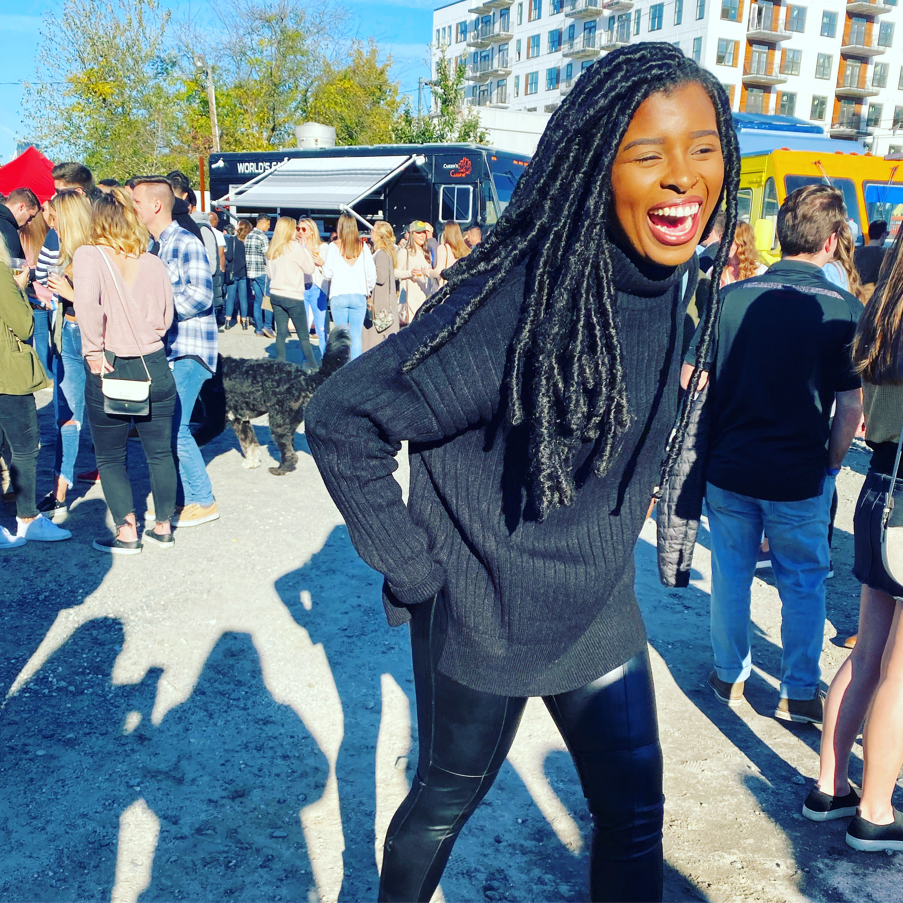

About
From the beginning Drew Wilson has been aware of the need for community and belonging.
From a young age, Drew loved the hustle and bustle of the public relations industry and strived to work behind the scenes for the most influential organizations. The Gastonia, NC native recently served as a public relations intern for JSW Media Group, a boutique entertainment and lifestyle public relations, brand management, and consulting firm based in Charlotte, NC. Prior to joining the JSW Media Group team, she earned a Bachelor of Science in Communication, Public Relations from Appalachian State University.
As a public relations major, she applied her communication skills to her simultaneous positions serving as the university’s Black Student Association President and Minority Women’s Leadership Circle Vice President. While representing marginalized demographics of the university, she guided, empowered, and strengthened the relationships amongst students, administrators, and the local community. Her experience working with multicultural groups established her interest in intercultural communication, a focus on building relationships amongst audiences from diverse backgrounds.
Her passionate, results-based leadership allows her to transform elaborate ideas into reality, capturing the essence of younger generations’ varying interests and social identities. During her tenure as public outreach coordinator, she increased the Black Student Association’s Twitter and Instagram follower counts by 200 within one week. She also created social media campaigns that led to an increased audience turnout for events such as the Black Excellence Awards, Black Arts, and the Dancehall Jam fundraiser. In her spare time, you can find Drew on Twitter sharing her millennial perspective on the latest pop culture events or catching up on the latest episode of her favorite podcast, “The Read.”